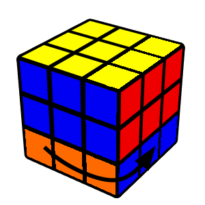
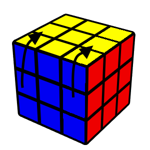
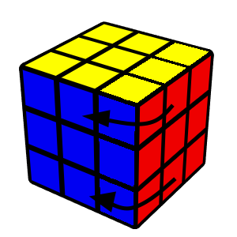

Cube Notation
Rubik's cube notation is really important especially to learn how to read
the algorithms and then know how to interpret and use them.
Let's take a look at how to read the moves of the cube.
Rubik's cube notation is really important especially to learn how to read
the algorithms and then know how to interpret and use them.
Let's take a look at how to read the moves of the cube.
Each letter of the cube in capital letters means, turn one layer of the rubik's cube clockwise.
R

Right
L
Left
U
Up
D
Down
F

Front
B
Back
Counterclockwise moves only exactly the opposite of clockwise moves.
R'

Right
L'

Left
U'

Up
D'

Down
F'

Front
B'

Back
When we read a 2 after the letter it means that we should turn the indicated
single layer twice (clockwise or counterclockwise is irrelevant).
R2
Right
L2
Left
U2
Up
D2
Down
F2
Front
B2
Back
After all these types of moves, there are moves that use more layers,
there are two ways to write them, the first is with the same letters as
before but with the lower case letter, the alternative is to write the letter followed by a w and then ' or 2.
r / Rw
Right
l / Lw
Left
u / Uw
Up
d / Dw
Down
f / Fw
Front
b / Bw
Back
These are moves that allow you to move the middle layer of the cube, there are also opposite moves with ' and double moves with 2.
M
Follow L
S
Follow F
E
Follow D
In addition to all the moves, there are also letters that indicate the rotation of the entire cube.
X
X'

Y
Y'

Z
Z'

Let us now try an example scramble to see how it works, so follow the scramble below and
try to see if you get the same result at the end.
Scrambles are always performed with the white face up and the green face forward.